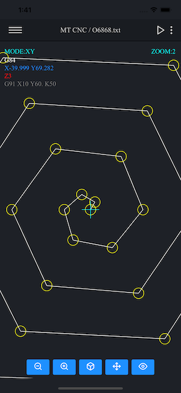

A huge power in your hand
Macro Terminal CNC is the most powerful, popular and advanced CNC simulator for parametric programming (macro programming) with Fanuc Macro B and Haas macro, trusted by hundreds of users!
Fanuc
Haas
Siemens 802D
Mazak ISO
Okuma ISO

Macro programming
Macro Terminal CNC is built specifically to support macro programming (parametric programming) and many system variables that are compatible with Fanuc Macro B or Haas macros. Macro Terminal CNC has a built-in special tool to analyze all calculations and logical expressions during code execution, which makes it extremely easy to test CNC programs or learn CNC parametric programming.
Cnc programming
Macro Terminal CNC not only supports parametric programming, but also absolute, incremental and polar programming which is compatible with ISO programming. Also remember that the Macro Terminal CNC supports multiple cycles (compatible with Fanuc and Haas controls) for milling machines and machining centers.
Read more


Learning CNC
Macro Terminal CNC is the perfect solution for anyone who wants to learn CNC programming.It has many useful sample programs that can facilitate the adventure with traditional CNC programming, parametric programming and the use of system variables or various frequently used cycles.
Program safer and faster
Cnc macro programming is an extremely efficient and flexible way to work on various CNC machines.However, it should be remembered that while CNC macros greatly improve traditional programming, even the slightest mistake can cause the machine to crash or cause injury or death to the operator.By using the Macro Terminal CNC, you can check your code accurately, thanks to the built-in module that displays all logical processes and calculations step by step.


Versatile
Macro Terminal CNC supports CNC cycles such as (Fanuc / Haas):G16 (polar coordinates), G51 (scaling), G52 (shift work offset), G68 (coordinate rotation), G65 / G66 (macro subroutine call), G98 (retract to initial “Z” value level), G99 (retract to “R” value level), repeat canned cycle (L and K) and Haas cycles such as: Haas G70 Bolt Hole Circle, Haas G71 Bolt Hole Arc, Haas G72 Bolt Holes Along an Angle.
What some of our customers think about Macro Terminal CNC?

Contact us
mobilecamcnc@gmail.com
We will answer you within 48hours*
*Excluding weekends and holidays